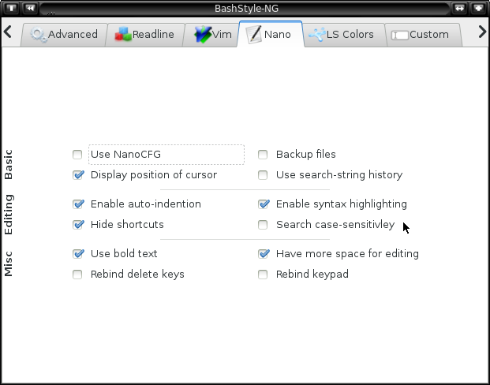

Chapter 10: Nano

10.0 Use NanoCFG
Let BS-NG take care of Nanos configuration.
9.1 Backup files
Backup files to <filename>~ before saving.
9.2 Display position of cursor
Display the cursor-position.
9.3 Enable auto-indention
Do auto-indention according to the file-type.
9.4 Enable syntax highlighting
Use highlight-colors, if a matching syntax-rule is available.
9.5 Hide shortcuts
Hide the shortcuts-list.
9.6 Search case-sensitively
Searches are done case-sensitive.
9.7 Use bold text
Use bold colors (if colors are enabled).
9.8 Have more space for editing
Also use the topmost line for editing.